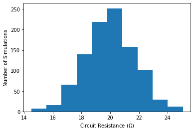
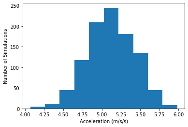
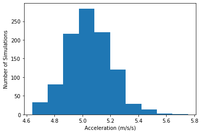
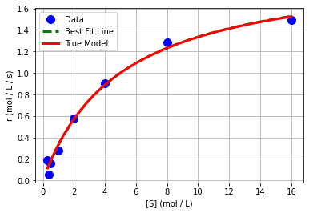
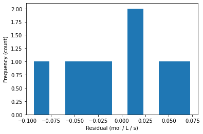
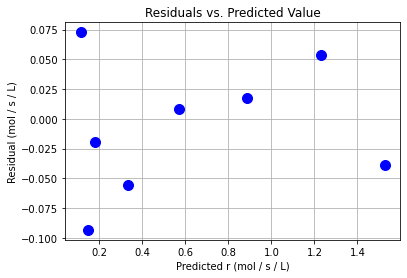
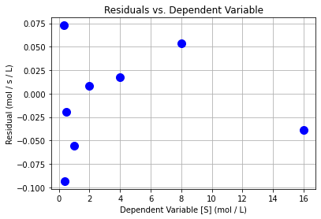
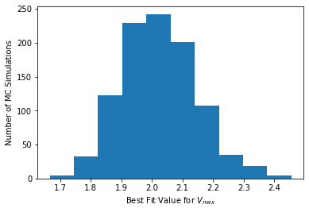
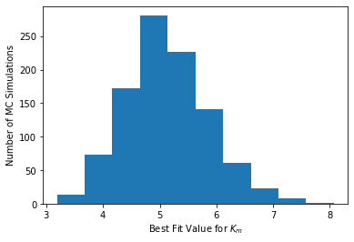
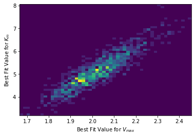

Monte Carlo Uncertainty Analysis for Nonlinear Regression
Contents
Monte Carlo Uncertainty Analysis for Nonlinear Regression¶
CBE 20258. Numerical and Statistical Analysis. Spring 2020.
© University of Notre Dame
# load libraries
import scipy.stats as stats
import numpy as np
import scipy.optimize as optimize
import math
import matplotlib.pyplot as plt
Simulation¶
Further Reading: §4.12
Consider two resistors in parallel with resistances \(X \sim \mathcal{N}(10~\Omega,~10^2~\Omega^2)\) and \(Y \sim \mathcal{N}(25~\Omega,~2.5^2~\Omega^2)\). The total resistance of the circuit is
Assume \(X\) and \(Y\) are independent.
What is \(P(19~\Omega \leq X \leq 21~\Omega)\), i.e., the probability the circuit is within specification?
Class Activity
Spend 3 minutes with a partner outlining your solution strategy using probability theory. First, write down the main steps. Then, if you have time, write down the formulas.
Using Simulation to Estimate a Probability¶
Instead of all of that calculus, we can use simulation to estimate this probability.
Repeat 1000s of times:
Generate X and Y using a random number generator
Compute \(R\) and record the value
# specify number of simulations
nsim = 1000
# create vector to store the results
R_sim = np.zeros(nsim)
# create normally distributed noise
# loc = mean
# scale = standard deviation
x = np.random.normal(loc = 100, scale = 10, size=(nsim))
y = np.random.normal(loc = 25, scale=2.5, size=(nsim))
# calculate a1, store result
R_sim = x * y / (x + y)
Class Activity
Estimate \(P(19~\Omega \leq X \leq 21~\Omega)\) using your simulation results.
Using Simulation to Estimate Means and Variances¶
# print some descriptive statistics
print("Mean: ",np.mean(R_sim)," Ohms")
print("Median: ",np.median(R_sim)," Ohms")
print("Standard Deviation: ",np.std(R_sim,ddof=1)," Ohms")
Mean: 20.0013635236533 Ohms
Median: 19.98083833958203 Ohms
Standard Deviation: 1.7275464430683998 Ohms
Using Simulation to Determine Whether a Population is Approximately Normal¶
# create histogram of calculated a1 values
plt.hist(R_sim)
plt.xlabel("Circuit Resistance ($\Omega$)")
plt.ylabel("Number of Simulations")
plt.show()

Monte Carlo Error Propagation¶
Further Reading: §4.12
Motivating Example: Cart + Incline¶
You and a classmate want to measure the acceleration of a cart rolling down an incline plane, but disagree on the best approach. The cart starts at rest and travels distance \(l = 1.0\) m. The location of the finish line is measured with negligible uncertainty. You (student 1) measure the instantaneous velocity \(v = 3.2 \pm 0.1 \) m/s at the finish line. Your classmate (student 2) instead measures the elapsed time \(t = 0.63 \pm 0.01\)s.
Student 1¶
Using instantaneous velocity, we can acceleration as follows:
First, let’s recap the standard error propagation approach from our homework.
Standard Error Propagation¶
## Results of 'standard' error analysis (from homework)
# define distance travelled
l = 1 # m
# define function to calculate a1
calc_a1 = lambda v: v**2 / (2*l)
# define velocity measurement and uncertainty
v = 3.2
v_std = 0.1
# calculate a1
a1 = calc_a1(v)
# estimate gradient with forward finite difference
da1dv = (calc_a1(v + 1E-6) - a1)/(1E-6)
# calculate uncertainty
sigma_a1 = abs(da1dv)*v_std
# report answer
print("Calculated acceleration: ",round(a1,2),"+/-",round(sigma_a1,2),"m/s/s")
Calculated acceleration: 5.12 +/- 0.32 m/s/s
Monte Carlo Error Propagation¶
We can also estimate the uncertainty in \(a_1\) using simulation. Below is the main idea.
Repeat 1000s of times:
Add \(\mathcal{N}(0,0.1^2)\) uncertainty to velocity measurement
Recalculate \(a_1\) and store result
Then calculate the standard deviation of the stored \(a_1\) results. In other words, we are simulated what would happen if we repeated the experiment many many times with an assumed random measurement error.
Class Activity
With a partner, complete the code below.
# specify number of simulations
nsim = 1000
# create vector to store the results
a1_sim = np.zeros(nsim)
# Add your solution here
# create histogram of calculated a1 values
plt.hist(a1_sim)
plt.xlabel("Acceleration (m/s/s)")
plt.ylabel("Number of Simulations")
plt.show()
# print some descriptive statistics
print("Mean: ",np.mean(a1_sim)," m/s/s")
print("Median: ",np.median(a1_sim)," m/s/s")
print("Standard Deviation: ",np.std(a1_sim)," m/s/s")

Mean: 5.113776787070997 m/s/s
Median: 5.115916657943146 m/s/s
Standard Deviation: 0.306782158290633 m/s/s
This standard deviation matches the uncertainty calculated with the error propagation formulas.
Student 2¶
Using instantaneous velocity, we can calculate acceleration as follows:
First, lets recap the solution to the homework.
Standard Error Propagation¶
## Results of 'standard' error analysis (from homework)
# define distance travelled
l = 1 # m
# define function to calculate a2
calc_a2 = lambda t: 2*l / t**2
# define time measurement and uncertainty
t = 0.63
t_std = 0.01
# calculate a2
a2 = calc_a2(t)
# estimate gradient with forward finite difference
da2dt = (calc_a2(t + 1E-6) - a2)/(1E-6)
# calculate uncertainty
sigma_a2 = abs(da2dt)*t_std
print("Calculated acceleration: ",round(a2,2),"+/-",round(sigma_a2,2),"m/s/s")
Calculated acceleration: 5.04 +/- 0.16 m/s/s
Monte Carlo Error Propagation¶
Class Activity
Apply the Monte Carlo approach to Student 2’s calculation. Start by copying and pasting the code from above.
# Add your solution here

Mean: 5.04614403662456 m/s/s
Median: 5.036806168624843 m/s/s
Standard Deviation: 0.15841862599598272 m/s/s
Uncertainty Analysis for Nonlinear Regression¶
Motivating Example: Michaelis-Menten Enzymatic Reaction Kinetics¶
The Michaelis-Menten equation is an extremely popular model to describe the rate of enzymatic reactions.
Additional information: https://en.wikipedia.org/wiki/Michaelis–Menten_kinetics
## Create dataset
# Define exact coefficients
Vmaxexact=2;
Kmexact=5;
# Evaluate model
Sexp = np.array([.3, .4, 0.5, 1, 2, 4, 8, 16]);
rexp = Vmaxexact*Sexp / (Kmexact+Sexp);
# Add some random error to simulate
rexp += 0.05*np.random.normal(size=len(Sexp))
# Evaluate model to plot smooth curve
S = np.linspace(np.min(Sexp),np.max(Sexp),100)
r = Vmaxexact*S / (Kmexact+S)
Nonlinear Regression + Linearized Uncertainty Analysis¶
Main idea: Solve the best fit optimization problem,
computationally. This works even if \(\hat{y_i} = f(\hat{\theta}, x)\) is a nonlinear function.
Recall \(\theta\) = [\(V_{max}\), \(K_m\)] for our example.
Step 1. Calculate Best Fit and Plot¶
## define function that includes nonlinear model
def model(theta,x):
'''
Michaelis-Menten model
Arguments:
theta: parameter vector
x: independent variable vector (S concentration)
Returns:
yhat: dependent variable prediction (r rate)
'''
yhat = (theta[0] * x) / (theta[1] + x)
return yhat
def regression_func(theta, x, y):
'''
Function to define regression function for least-squares fitting
Arguments:
theta: parameter vector
x: independent variable vector
y: dependent variable vector (measurements)
Returns:
e: residual vector
'''
e = y - model(theta,x);
return e
## specify initial guess
theta0 = np.array([1.0, 5.0])
## specify bounds
# first array: lower bounds
# second array: upper bounds
bnds = ([0.0, 0.0], [np.inf, np.inf])
## use least squares optimizer in scipy
# notice that 'args' is used to pass the data vectors
nl_results = optimize.least_squares(regression_func, theta0,bounds=bnds, method='trf',args=(Sexp, rexp))
theta = nl_results.x
print("theta = ",theta)
theta = [2.00960162 5.04822594]
# generate predictions
S_pred = np.linspace(np.min(Sexp),np.max(Sexp),20)
r_pred = model(theta, S_pred)
# create plot
plt.plot(Sexp,rexp,'.b',markersize=20,label='Data')
plt.plot(S_pred,r_pred,'--g',linewidth=3,label='Best Fit Line')
plt.plot(S,r,'r-',linewidth=3,label='True Model')
plt.xlabel('[S] (mol / L)')
plt.ylabel('r (mol / L / s)')
plt.grid(True)
plt.legend()
plt.show()

Step 2. Residual Analysis¶
## calculate residuals
y_hat2 = model(theta,Sexp)
e2 = rexp - y_hat2
print(e2)
[ 0.07276519 -0.09333686 -0.01954843 -0.05600921 0.00861823 0.01787977
0.05370262 -0.03878427]
plt.hist(e2)
plt.xlabel("Residual (mol / L / s)")
plt.ylabel("Frequency (count)")
plt.show()

plt.plot(y_hat2,e2,"b.",markersize=20)
plt.xlabel("Predicted r (mol / s / L)")
plt.ylabel("Residual (mol / s / L)")
plt.grid(True)
plt.title("Residuals vs. Predicted Value")
plt.show()

plt.plot(Sexp,e2,"b.",markersize=20)
plt.xlabel("Dependent Variable [S] (mol / L)")
plt.ylabel("Residual (mol / s / L)")
plt.grid(True)
plt.title("Residuals vs. Dependent Variable")
plt.show()

Step 3. Uncertainty Analysis / Calculate Covariance Matrix¶
where \(J\) is the Jacobian of the residuals w.r.t. \(\theta\):
print("Jacobian =\n")
print(nl_results.jac)
Jacobian =
[[-0.05609337 0.02107714]
[-0.0734184 0.02708069]
[-0.0901189 0.03264162]
[-0.16533774 0.05493561]
[-0.28375935 0.08090592]
[-0.44207561 0.09818453]
[-0.61311017 0.09442718]
[-0.76015908 0.07257699]]
sigre = (e2.T @ e2)/(len(e2) - 2)
Sigma_theta2 = sigre * np.linalg.inv(nl_results.jac.T @ nl_results.jac)
print("Covariance matrix:\n",Sigma_theta2)
Covariance matrix:
[[0.01765168 0.0964166 ]
[0.0964166 0.63099146]]
Nonlinear Regression + Monte Carlo Uncertainty Analysis¶
Main Idea
Use residuals to estimate uncertainty in dependent variable
Simulate regression procedure 1000s of times, adding random noise to dependent variable
Examine distribution of fitted values
# variance of residuals
print(sigre)
0.003717977540144133
Pseudocode¶
Class Activity
Write pseudocode with a partner.
Python Hints¶
Let’s say we want to generate a vector with 5 elements, each normally distributed with mean 0 and standard deviation 2. We can do this in one line using Python:
my_vec = np.random.normal(loc = 0,scale = 2,size=(5))
print(my_vec)
[-2.71241136 0.91627376 -0.96646476 2.57309647 0.73030355]
Implement in Python¶
Class Activity
Implement your pseudocode in Python.
# Number of Monte Carlo samples
nmc = 1000;
# Number of data points
n = len(rexp)
# Declare a matrix to save the fitted parameters
theta_mc = np.zeros((nmc,2))
# Recall, the standard deviation of the residuals is sigre**0.5
# Perform Monte Carlo simulation
# Add your solution here
Visualize Distribution of Fitted Parameters¶
# Histogram for Vmax
plt.hist(theta_mc[:,0])
plt.xlabel("Best Fit Value for $V_{max}$")
plt.ylabel("Number of MC Simulations")
plt.show()

# Histogram for Km
plt.hist(theta_mc[:,1])
plt.xlabel("Best Fit Value for $K_{m}$")
plt.ylabel("Number of MC Simulations")
plt.show()

# We can even make a 2D histogram
plt.hist2d(theta_mc[:,0], theta_mc[:,1],bins=50)
plt.xlabel("Best Fit Value for $V_{max}$")
plt.ylabel("Best Fit Value for $K_{m}$")
plt.show()

Compute Covariance Matrix¶
## We can calculate covariance in one, carefully constructed line
# For some reason, the NumPy developers choose to assume each ROW is a new variable
# and each COLUMN is a different observation. I would have choose a flipped convention.
# Our 'theta_mc' has each row as a different observation (simulation).
# 'rowvar=False' tells NumPy to flip its convention. This is a great example of
# WHY YOU SHOULD ALWAYS CHECK THE DOCUMENTATION!!!
np.cov(theta_mc,rowvar=False)
array([[0.01497054, 0.08128554],
[0.08128554, 0.54461604]])